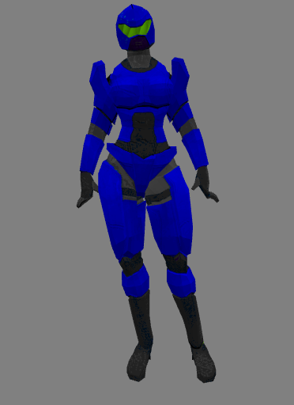
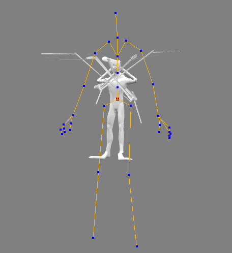

El desarrollo de videojuegos independiente es un infierno tanto siendo programador, como
modelador, animador, etc. Es complicado mantener un equipo de desarrollo con la misma pasión, a menos que
haya una remuneración de por medio, cosa que si no se tienen los suficientes recursos sería dejar a la suerte el proyecto.


La creación de LostLab fue un desafío emocionante, pero nuestro equipo de desarrollo se enfrentó a numerosos obstáculos en el camino. Siendo un equipo pequeño, la organización a veces resultaba complicada, y surgieron algunos problemas de coordinación que ralentizaron nuestro progreso. Sin embargo, la mayor problemática con la que nos encontramos fue la falta de recursos y experiencia necesarios para llevar a cabo el proyecto de manera eficiente.
Una de las áreas donde más batallamos fue en el modelado, especialmente en la creación de animaciones. La falta de experiencia en este campo nos llevó a cometer errores y a enfrentarnos a dificultades técnicas que nos consumieron mucho tiempo y energía. A pesar de nuestros esfuerzos por superar estos desafíos, nos dimos cuenta de que necesitábamos ayuda externa para poder avanzar de manera significativa.
A medida que intentábamos resolver estos problemas, nos dimos cuenta de que LostLab se encontraba en una pausa indefinida. Aunque estábamos concientes por el potencial del juego y por la historia que queríamos contar, nos dimos cuenta de que necesitábamos tomar un paso atrás y reevaluar nuestras estrategias y recursos disponibles.
A pesar de las dificultades que enfrentamos, seguimos creyendo en el potencial de LostLab y estamos comprometidos a encontrar una solución para superar estos obstáculos. Ya sea buscando financiamiento adicional, ampliando nuestro equipo con talentos especializados o explorando nuevas herramientas y técnicas de desarrollo, estamos decididos a hacer realidad nuestro sueño de llevar LostLab al mundo de los videojuegos.